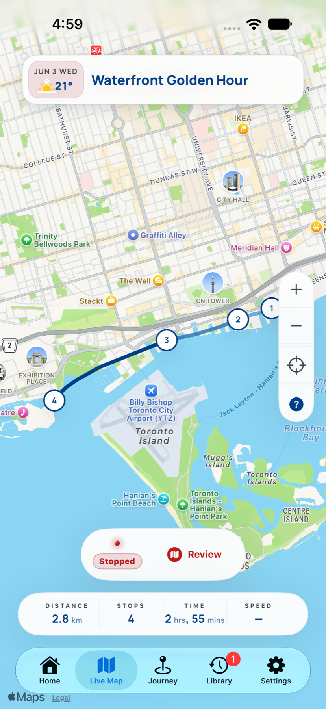
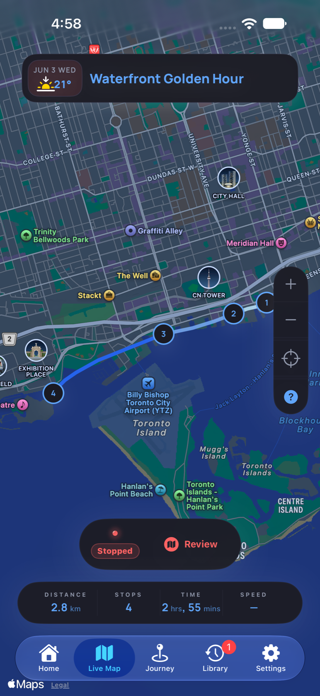
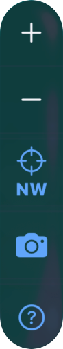
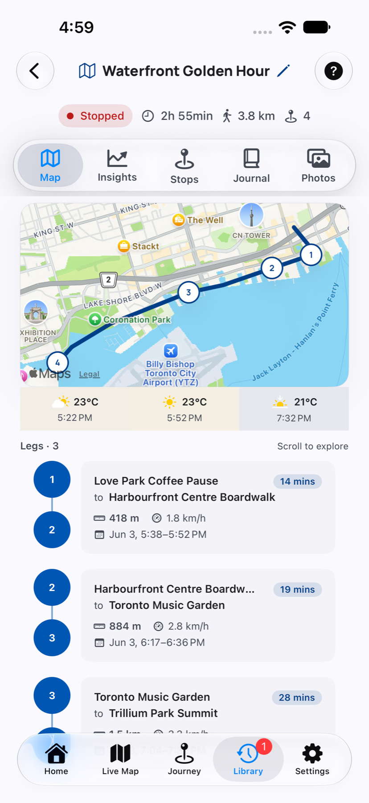
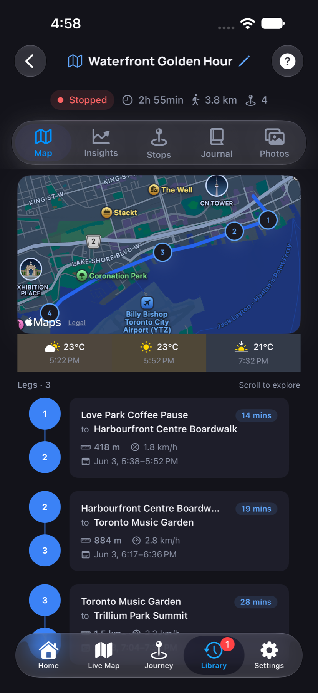
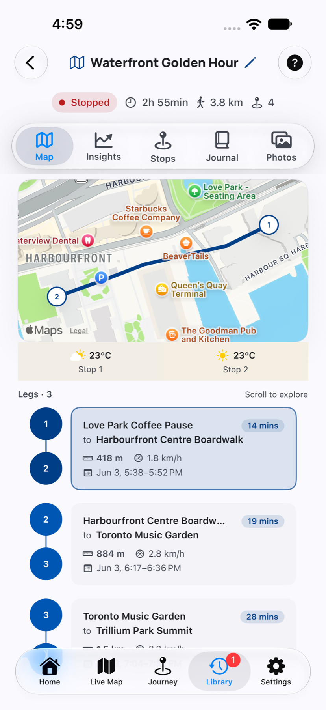
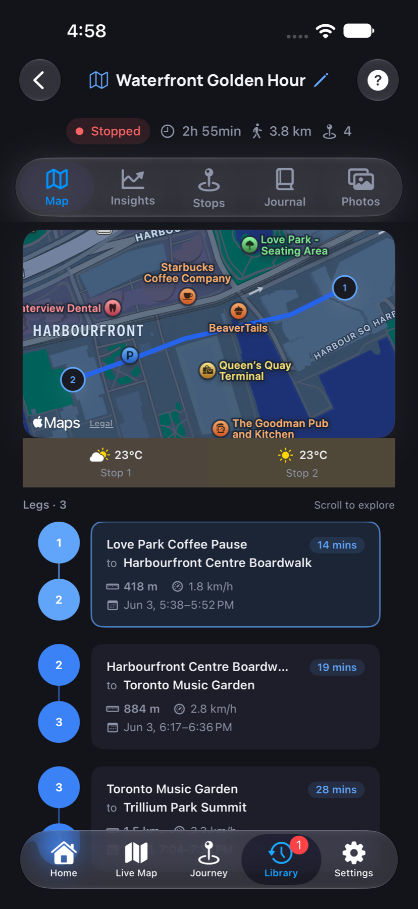

The blue line follows the recorded path instead of drawing straight lines between stops.
Map Help
Follow the shape of a journey.
Use the Live Map bottom tab for recording and map controls. Open a journey’s Map facet to review its route, weather strip, and dated travel legs.


What You Can See Here
Live Map combines route, stops, and recording controls.
Numbered markers show the order DayMotion captured each stop.
The status area shows whether the journey is active, paused, stopped, or complete.
The camera button captures a photo from the map and keeps it connected to the current journey context.
Zoom in and out to inspect a dense stop area or step back to see the whole route.
Use the position control to recenter on your current location or return to the active map context.
Live Map Controls
Use the controls to record, inspect, and add photos.

Starts a new recording session so DayMotion can capture movement, stops, weather, photos, moods, and notes for the journey.
Temporarily stops recording new movement while keeping the journey available to resume later.
Continues a paused journey so new route points and stops can be added to the same memory.
Ends the active journey. Review the route, stops, journal, photos, and insights afterward.
Use the camera from the map when the moment belongs to where you are now. Photos become part of the journey memory.
Use position when you have panned away and want the map to follow your current area again.
Read The Map
Route, stops, and controls work together.
DayMotion turns movement into a map-based record. The route, stop markers, timing, distance, photos, and recording controls help you understand what happened and what is still being captured.
The route line shows captured movement across the journey. Curves and intermediate points preserve the shape of travel.
Stops are ordered from first to last. Open the Stops facet in Journey to review time, weather, mood, journal text, and photos.
Use the camera button when a photo should belong to the active journey, especially while reviewing the map context.
The bottom tabs are Home, Live Map, Journey, Library, and Settings. Inside a journey, Map is one of the review facets alongside Insights, Stops, Journal, and Photos.
Journey · Map
Review the route, weather, and legs together.
Open a journey from Library, or use the Journey tab, then choose the Map facet. The route overview sits above a weather strip and a list of legs between stops.
Weather along the journey
The strip shows recorded conditions, temperatures, and times. Similar readings are condensed so changes are easier to spot. Swipe horizontally when more readings are available.
Dated leg cards
Each leg connects two stops and shows its duration, distance, speed, and date and time range. Scroll the leg list to review the rest of the journey.




Select A Leg
Focus on the travel between two stops.
Tap a leg card to focus the map on that section. The weather strip updates to the two endpoint stops and any recorded weather changes between them.
Tap the selected leg again to return to the whole-journey overview. If an endpoint has no recorded weather, the strip marks it as unavailable.
Tips
Use the map while recording and while reviewing.
Start the journey before the first meaningful movement so the route has useful context.
Pause when you want DayMotion to stop recording new movement without ending the journey.
Use the camera button from the map when the photo is tied to where you are in the route.
Zoom in around dense stops and use position to return to your current area after panning.
Questions
Common questions
What is the difference between Live Map and the Map facet?
Live Map is a bottom tab with recording and location controls. The Map facet is inside a journey and brings its route, recorded weather, and dated leg cards together for review.
What is the camera button for?
It lets you capture a photo from Live Map while preserving the journey context. Use it when the photo belongs to the place or route you are recording.
What is the difference between pause and stop?
Pause keeps the journey available while DayMotion stops recording new movement. Stop ends the active journey so you can review it as a completed memory.
Why use zoom controls?
Zoom in to inspect nearby stops or route detail. Zoom out when you want the full shape of the journey.
What does the position button do?
It brings the map back to your current area or active tracking context after you have moved the map manually.
Why does the route curve instead of connecting stops directly?
The route uses captured geometry so the journey reads like a path you traveled, not just direct stop-to-stop connectors.